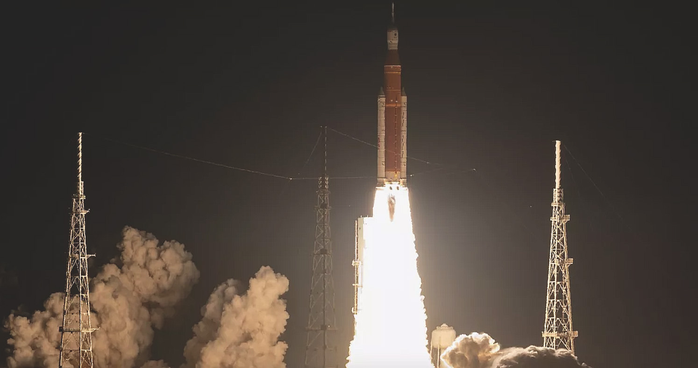
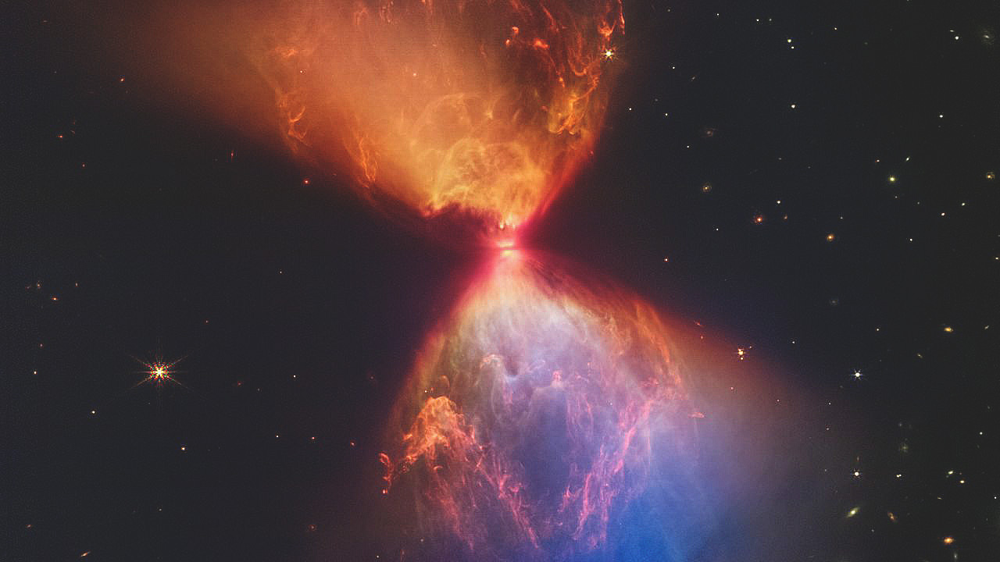
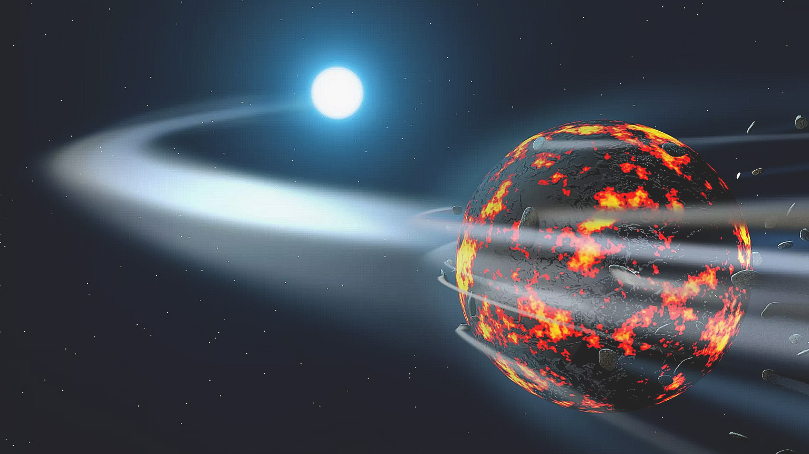
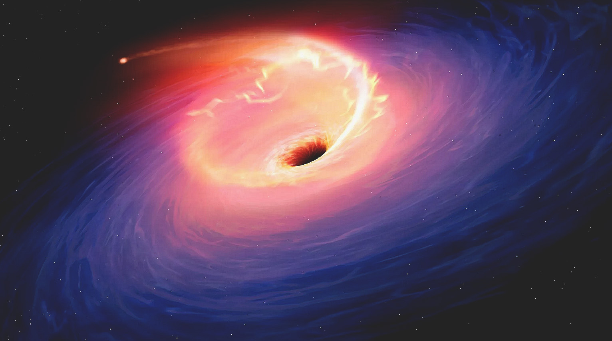
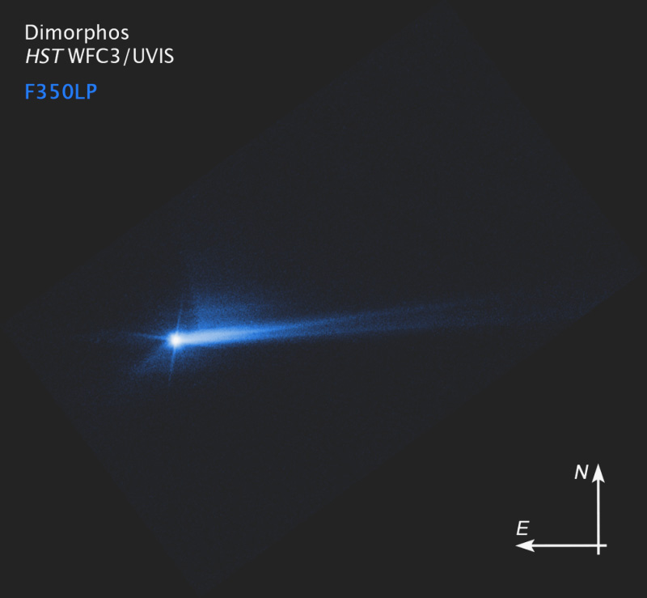

Learn about the latest developments concerning space exploration and discoveries across the universe
from several different news sources.
To keep up to date, sign up for the newsletter and stay posted.
A Leonid meteor streaks across the sky over Ankara, Turkey, on November 17, 2020. This year's shower is set to peak on Thursday evening. (Image credit: Dogukan Keskinkilic/Anadolu Agency/Getty Images)
"Known as some of the fastest meteors around, the Leonids blaze across the night sky annually during the month of November. Historically, they are considered to be one of the most impressive meteor showers on record, largely due to the meteor storm they form roughly every 33 years, causing thousands of meteors to rain down in the night sky.
This is not a year for a storm, but there are still many chances to see the brilliant Leonids. On Thursday night, the shower is expected to peak at 7 p.m. ET, according to EarthSky. The celestial event will be visible to all of those on the night side of the world at that time."
Read more

NASA's Artemis 1 mission launches toward the moon from Kennedy Space Center in Florida on Nov. 16, 2022. (Image credit: NASA/Bill Ingalls)
"The most powerful NASA rocket ever built soared into the Florida early morning sky on the Artemis 1 mission, a risky and long-delayed test flight to send a next-generation space capsule to the moon and back.
Artemis launch director Charlie Blackwell-Thompson addressed her team at mission control.
"This is your moment," she said. "We are all part of something incredibly special: The first launch of Artemis, the first step in returning our country to the moon and on to Mars. What you have done today will inspire generations to come.""
Read more

The protostar L1527, shown in this image from the James Webb Space Telescope, is embedded within an hourglass-shape cloud of material that is feeding its growth. (Image credit: NASA/ESA/CSA/STSc)
"The protostar the image centers around is hidden from view in the neck of a dark, hourglass-shape cloud of gas and dust. The dark line across the middle of the neck is a protoplanetary disc — dense gas and dust that could form a planet in the future — about the size of our solar system."
Read more

An artist's depiction of a large asteroid breaking up and falling into a white dwarf. (Image credit: Amanda Smith)
"We still have a lot to learn about our solar system's childhood. Since we can't go back to the beginning, astronomers rely on other stars for insight into the early years of how stars and their planets are made.
Recently, a team of astronomers found evidence that stars and planets actually grow up together, forming at the same time in a solar system's life.
"We have a pretty good idea of how planets form, but one outstanding question we've had is when they form: does planet formation start early, when the parent star is still growing, or millions of years later?" Amy Bonsor, an astronomer at Cambridge University in the U.K. and lead author of the new research, said in a statement."
Read more

Artwork depicting a tidal disruption event (TDE). TDEs are causes when a star passes close to a supermassive black hole and get torn apart by the gravity of the latter. The debris forms a fan-shaped pattern around the black hole before eventually falling in. (Image credit: Mark Garlick/Science Photo Library/Getty Images)
"A hitherto undiscovered black hole announced its presence to astronomers when it ripped apart and devoured a star that wandered too close to it.
The intermediate-mass black hole located in a dwarf galaxy a million light-years from Earth shredded the star in an occurrence that astronomers call a Tidal Disruption Event (TDE). The TDE made itself visible when it blasted out a flare of radiation so powerful that it briefly outshone every star in its dwarf galaxy home combined.
This TDE could help scientists better understand the relationship between galaxies and the black holes within them. It also provides astronomers with another intermediate black hole to study. "This discovery has created widespread excitement because we can use tidal disruption events not only to find more intermediate-mass black holes in quiet dwarf galaxies but also to measure their masses," research co-author and UC Santa Cruz (UCSC) astronomer Ryan Foley said in a statement (opens in new tab)."
Read more

The DART impact of the little asteroid Didymos B – aka Dimorphos – happened on September 26, 2022. Some 285 hours after the impact – on October 8 – the Hubble Space Telescope caught this image. It shows debris blasted from Didymos B’s surface still moving in space. NASA said on October 11 that the shape of Didymos B’s debris tail has changed over time. Now, scientists are continuing to study this material and how it moves in space. (Image credit: NASA/ESA/STScI/Hubble
"NASA said on October 11, 2022, that analysis of data obtained over the past two weeks by NASA's Double Asteroid Redirection Test (DART) investigation team shows the spacecraft did successfully alter the orbit of the little asteroid moon Didymos B, aka Dimorphos. NASA said:
"This marks humanity's first time purposely changing the motion of a celestial object and the first full-scale demonstration of asteroid deflection technology."
Prior to DART's impact, it took Dimorphos 11 hours and 55 minutes to orbit its larger parent asteroid, Didymos. But now, since DART's intentional collision with the small moon on September 26, NASA said:
"Astronomers have been using telescopes on Earth to measure how much that time has changed. Now, the investigation team has confirmed the spacecraft's impact altered Dimorphos' orbit around Didymos by 32 minutes, shortening the 11 hour and 55-minute orbit to 11 hours and 23 minutes. This measurement has a margin of uncertainty of approximately plus or minus 2 minutes.
Before its encounter, NASA had defined a minimum successful orbit period change of Dimorphos as change of 73 seconds or more. This early data show DART surpassed this minimum benchmark by more than 25 times.""
Read more